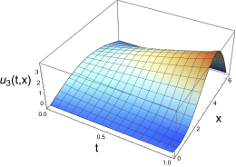
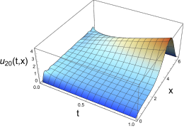
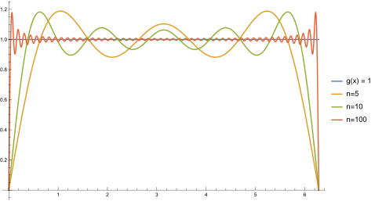
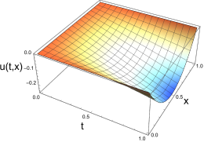
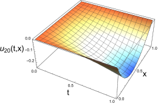

PDEs 7: Parabolic PDE, well-posedness and regularity
1 Three point summary
A parabolic PDE describes how a function evolves over time under the influence of an elliptic operator. Unlike their elliptic counterparts, parabolic PDEs are typically well-posed. For well-behaved coefficients, a unique solution always exists and depends continuously on the initial data.
Solutions to parabolic PDEs can be viewed as functions mapping an instant in time to a function in a Banach space. From this viewpoint, the PDE becomes an infinite dimensional ODE. The Galerkin method is a powerful tool to prove the well-posedness of the problem and approximate its solutions using a finite-dimensional ODE that approximates the original infinite-dimensional problem.
The solution is smoother than the initial data and will always be at least continuous in time and (weakly) differentiable in space. If the coefficients of the PDE are smooth, the solution will be smooth as well.
2 Notation
As in the rest of the series, we will let \(U\) denote an arbitrary open subset of \(\R^d\). That is, it may be bounded or unbounded with no conditions on the regularity of the boundary (if it exists). To denote a smooth domain, we will use the notation \(\Omega\).
We will be working with functions of time and space \(u(t,x)\) defined on some time interval \(I=[0, T]\) and spatial domain \(U\). We will denote by \(u(t)\) the function \(u(t,\cdot):U\to \R\).
Given a topological vector space \(X\) with dual \(X'\) and \(x \in X, w \in X'\) we write the duality pairing
\[ \begin{aligned} (x,w):= w(x). \end{aligned} \]
3 Introduction
In the elliptic case, we studied the well-posedness and regularity of solutions to an elliptic PDE of the form
\[ \begin{aligned} \begin{cases} \Ll u = f & \text{in } U \\ u = 0 & \text{on } \partial U \end{cases} \end{aligned} \]
where the second order differential operator \(\Ll\) was given in divergence form as
\[ \begin{aligned} -\nabla \cdot (\bm{A} \nabla u)+ \nabla \cdot (\bm{b} u)+cu. \end{aligned} \tag{1}\]
and verified the ellipticity condition. After defining the weak formulation of the problem, we naturally obtained the function spaces we were interested in and, under some restrictions on the coefficients, proved the existence and uniqueness of solutions. When solutions were not guaranteed to be unique, we studied the spectrum of \(\Ll\), and in all cases, we showed that the solution had improved regularity as compared to the coefficients of the PDE.
In this post we now look to mimic the previous analysis but for parabolic PDEs. We define the operator
\[ \begin{aligned} \Ll u:= -\nabla \cdot (\bm{A} \nabla u)+ \bm{b} \cdot \nabla u+cu, \end{aligned} \tag{2}\]
(by Leibnit’z rule one can move between (1) and (2)) and consider the parabolic PDE
\[ \begin{aligned} \begin{cases} \partial_t u + \Ll u = f & \text{in } I\times U \\ u(0) = g & \text{on } U \\ u = 0 & \text{on } I\times \partial U, \end{cases} \end{aligned} \tag{3}\]
where \(I=[0,T]\) is the time interval of interest and \(0<T< \infty\). Here, we need an extra initial condition \(u(0) = g\) that tells us the initial state of the system. The operator \(\Ll\) has the same form as in (2), however now the coefficients \(\bm{A}(t, \bm{x}), \bm{b}(t, \bm{x}), c(t, \bm{x})\) are allowed to depend on both time and space. In the next sections, we will define the weak formulation of the problem and study the well-posedness and regularity of solutions. As we will see, within the functions spaces of interest, (3) is always well-posed. This is in contrast to elliptic PDEs, where well-posedness was not guaranteed in general.
4 Weak formulation
4.1 Banach valued functions
To define weak solutions to (3), it is convenient to switch our viewpoint. Instead of thinking of \(u\) as a real-valued function of time and space, we think of it as a Banach space valued function of time
\[ \begin{aligned} u: I \to X, \quad t \mapsto u(t), \end{aligned} \]
where \(X\) is some Banach space of function on \(U\) (such as \(L^2(U), H_0^1(U),...\)) and we use the notation \(u(t)(x):= u(t,x)\). This way of viewing \(u\) is an essential tool in the theory of evolution PDEs, which transform the PDE (3) into an infinite dimensional linear ODE.
To be able to proceed, we need to define an integral on functions valued in Banach spaces. This integral is called the Bochner integral. To briefly summarize, given a separable Banach space \(X\) and \(p \in [1, \infty]\) we define
\[ \begin{aligned} L^p(I \to X)= \set{f: I \to X: f \text{ measurable and } \norm{f}_{L^p(I \to X)}< \infty}, \end{aligned} \tag{4}\]
where functions equal almost everywhere are identified, and the norm is defined as
\[ \begin{aligned} \norm{f}_{L^p(I,X)} &:= \left( \int_I \norm{f(t)}_X^p \d t \right)^{1/p}, \quad p \in [1, \infty),\\ \|f\|_{L^{\infty}(I\rightarrow X)}:=\inf \left\{r>0: \mu\left(\{t \in I : \|f(t)\|_X > r\}\right)=0\right\}. \end{aligned} \]
Then, hte spaces \(L^p(I \to X)\) are Banach spaces and functions \(f\) in \(L^1(I \to X)\) have a well defined Bochner integral
\[ \begin{aligned} \int_I f(t) \d t \in X. \end{aligned} \]
This integral generalizes the Lebesgue integral and is also constructed by approximating the integrable functions by simple functions of the form \(\sum_{i=1}^n 1_{A_i} x_i\) where \(A_i\) are sets with finite measure and \(x_i \in X\).
Many familiar properties carry over to the Bochner integral. Namely, integration is a continuous linear operator on \(L^1(I \to X)\). Furthermore, given \(p \in [1,\infty)\) and \(v \in L^{p'}(I \to X')\), where \(p'\) is the conjugate exponent of \(p\), we can define the duality pairing
\[ \begin{aligned} (u,v):= \int_I (u(t),v(t))_X \d t, \quad u \in L^p(I \to X). \end{aligned} \]
With this identification, the dual of \(L^p(I \to X)\) is equal to \(L^{p'}(I \to X')\) . We will also use that if \(\phi_n \in C^\infty(I)\) is a smooth approximation of unity then, for \(p \in [1, \infty)\)
\[ \begin{aligned} \lim_{n \to \infty} u * \phi_n \to u \text{ in } L^p(I \to X),\quad \quad \lim_{n \to \infty} u * \phi_n=u \text{ almost everywhere }. \end{aligned} \tag{5}\]
To make the notation more readable we will use the convention of denoting function spaces in temporal and spatial domains by the subindexes \(t,x\). For example, we write
\[ \begin{aligned} L^2_t H^1_{0,x} & := L^2(I \to H^1_0(U)), \quad L^2_t H^{-1}_{x} := L^2(I \to H^{-1}(U)) \\ L_{t,x}^\infty & := L^\infty(I \times U), \quad\quad\qquad\quad L^2_x := L^2(U). \end{aligned} \]
Due to the previous discussion we have that
\[ \begin{aligned} L^2_t H^1_{0,x}(U)' = L^2_t H^{-1}_{x}(U). \end{aligned} \tag{6}\]
A tricky aspect of PDE is figuring out what space \(X\) should be? The choice of \(X\) needs to be guided by what bounds one can obtain in the norm of \(X\). As we will see when we derive energy bounds for \(u\), the space \(X=H_0^1(U)\) is the natural Banach space to consider in this setting.
4.2 Weak solutions
As may have become familiar at this point of the series, to derive the weak formulation of our problem (3), we suppose that \(u\) is smooth, multiply the equation by a test function \(v \in C_c^\infty(I\times U)\) and integrate over \(I\times U\). We obtain that, in addition to the condition \(u(0)=g\)
\[ \begin{aligned} \int_I \int_U u' v + \int_I \int_U (\bm{A} \nabla u) \cdot \nabla v + \int_I \int_U (\bm{b} \cdot \nabla u ) v + \int_I \int_U c u v = \int_I \int_U f v, \end{aligned} \tag{7}\]
where for brevity in the notation we omitted the customary \(\dx \d t\) in the integrals and wrote \(u'= \partial _t u\). Equivalently, with the notation for the duality pairing, we can write (7) and the boundary condition as
\[ \begin{aligned} (v, u')+ (\nabla v, \bm{A} \nabla u) + ( v, \bm{b}\cdot \nabla u) + (v, cu) = (v, f), \quad u(0) = g. \end{aligned} \tag{8}\]
For the following theory we need some assumption on the coefficients and the data. Firstly, we give the following definition
Definition 1 We say that \(\bm{A}\) is parabolic if there exists a constant \(\alpha>0\) such that
\[ \begin{aligned} (\bm{A}(t,\bm{x}) \bm{\xi}) \cdot \bm{\xi} \geq \alpha \abs{\xi}^2 \quad \forall (t,\bm{x}) \in I \times \Omega,\, \bm{\xi} \in \R^d. \end{aligned} \tag{9}\]
This is the parabolic analog of the ellipticity condition we required in the previous post. Physically speaking, it guarantees that diffusion does not go to zero and occurs from regions of larger concentration to lower concentration.
Theorem 1 We assume that \(\bm{A}\) is parabolic and for all \(i,j=1,\dots,d\)
\[ \begin{aligned} A_{ij}, b_i , c \in L^\infty_{t,x}, \quad f \in L^2_t H^{-1}_x, \quad g \in L^2_x. \end{aligned} \]
The boundedness of \(\bm{A},\bm{b},c\) is expedient so that the integrals in (8) are well defined.
For (8) to make sense and verify the boundary condition \(u=0\) on \(\partial U\), we give the following definition.
Definition 2 (Weak solution) Under Assumption Theorem 1, we say that \(u\) is a weak solution of the parabolic problem (3) if
\[ \begin{aligned} u \in L^2_t H^1_{0,x}, \quad u' \in L^2_t H^{-1}_x, \end{aligned} \]
and (8) is verified for all \(v \in L^2_tH^1_{0,x}\).
With the above definition, all the terms (8) are well defined, where the duality pairing is to be interpreted as the one given by (6). Furthermore, the boundary condition \(u=0\) on \(\partial U\) is automatically satisfied as \(u(t) \in H_0^1(U)\) for almost all \(t\) and a quick sanity check shows that the various functional spaces in definition Definition 2 are logical as if \(u \in L^2_t H^1_{0,x}\) then \(\Ll u \in L^2_t H^{-1}_x\) and from (3) we should also have \(u' \in L^2_t H^{-1}_x\). It only remains to justify that \(u(0)\) is well-defined. This is proved in the following lemma.
Lemma 1 Let \(u \in L_t^2H_{x}^1\) with \(u' \in L_tH_x^{-1}\). Then, \(u \in C_t L_x^2\) with
\[ \begin{aligned} \norm{u}_{C_t L_x^2} \lesssim \norm{u(0)}_{L_x^2}+ \norm{u}_{L_t^2H_{x}^1}+ \norm{u'}_{L_tH_x^{-1}}. \end{aligned} \]
Proof. Let \(\phi_n \in C_c^ \infty(I)\) be a smooth approximation to the identity and define \(u_n(t):=(u* \phi_n)(t)\) (we use the convention of extending \(u\) by zero outside of \(I\) so the convolution is well defined). Then, \(u_n \in C^\infty_t L_x^2\) converges almost everywhere and in \(L_t^2 H_x^1\) to \(u\) and \(u_n '\) converges in \(L_t^2 H_x^{-1}\) to \(u'\) (see (5)).Given \(n , m >0\) write \(w_{n,m}:= u_n - u_m\). We have that,
\[ \begin{aligned} \left(\norm{u_n(t)}^2_{L_x^2}\right)' = 2\br{u_n(t),u_n'(t)}_{L^2_x}. \end{aligned} \]
As a result, by the fundamental theorem of calculus, given any \(s,t \in I\),
\[ \begin{aligned} \norm{w_{n,m}(t)}_{L^2_x}^2 = \norm{w_{n,m}(s)}_{L^2_x}^2 +2\int_{s}^t \br{w_{n,m}(r),w_{n,m}'(r)}_{L^2_x} \d r. \end{aligned} \]
Taking any \(s\) such that \(u_n(s) \to u(s)\) and the max over \(t\) gives
\[ \begin{aligned} \limsup_{n , m \to \infty} \max_{t \in I}\norm{w_{n,m}(t) }_{L^2_x}^2 \lesssim 0 + \limsup_{n , m \to \infty}\int_{I} \norm{w_{n,m}(r) }_{H^1_x}^2 \d r + \int_{I} \norm{w'_{n,m}(r)}_{H^{-1}_x}^2 \d r=0, \end{aligned} \tag{10}\]
where in the last equality we used that \(u_n ,u'_n\) converge to \(u,u'\) in the respective norms.
Equation (10) shows that \(u_n\) is a Cauchy sequence in the Banach space \(C_t L_x^2\) and, as a result, converges to a continuous function \(v\) in \(C_t L_x^2\). Since it also converges almost everywhere to \(u\), we must have that \(v=u\). This shows that \(u \in C_t L_x^2\).
To prove the bound of the theorem, suppose first that \(u\) is smooth in \(t\). Then, by the fundamental theorem of calculus and the definition of the dual norm
\[ \begin{aligned} \norm{u(t)}_{L_x^2}^2 & = \norm{u(0)}_{L_x^2}^2 + 2\int_I \br{u'(r),u(r)}_{L_x^2} \d r \\&\leq \norm{u(0)}_{L_x^2}^2 + 2 \int_I \norm{u'(r)}_{L^2_tH_x^{-1}}\norm{u(r)}_{L^2_tH_x^1} \d r. \end{aligned} \]
The bound follows Cauchy-Schwartz, and the non-smooth case follows by approximating \(u\) by smooth \(u_n = u*phi_n\).
5 Well-posedness of the problem
We now aim to show that the problem (3), or more precisely its weak formulation (8), is well-posed.
5.1 A naive approach
As we have discussed in the previous section, equation (3) can be seen as an infinite dimensional linear ODE. As a result, we could hope that the theory of linear ODE will give us a solution. Working directly we would write \(F(u):= -\Ll u + f\) and the equation (3) as
\[ \begin{aligned} u'(t)= F(u(t)), \quad u(0) = g. \end{aligned} \tag{11}\]
Then, writing once more \(X =H_0^1(U)\), we could try to emulate Picard’s theorem for scalar-valued ODEs to obtain a fixed point for
\[ \begin{aligned} \Phi: C([0,\varepsilon ] \to X) \to C([0,\varepsilon ] \to X), \quad u \mapsto \Phi(u)(t) := g + \int_I F(u(s)) \d s. \end{aligned} \]
The only problem with this is that \(F\) does not map \(X\) to \(X\). As a result, the mapping \(\Phi\) is not well defined. If the initial data is smooth, we could hope to set \(X = C_c^\infty(U)\), and then \(F\) would map \(X\) to \(X\). However, \(C^\infty_c(U)\) is not a Banach space, so further modifications would be required. As a result, we need a more refined approach. In the next section, we use the Galerkin method to prove the problem’s well-posedness.
5.2 Galerkin solutions
Instead of working directly in infinite dimensions, we project our problem onto a finite-dimensional space spanned by \(n\) basis functions \(\set{\phi_i}_{i=1}^n\). If we are able to solve the projected problem, we hope that as the number of basis functions \(n\) increases, the solution will converge to the true solution. This is the idea behind the Galerkin method, which is widely used in the numerical study of PDEs.
Exercise 1 Use that \(L^2(U)\) is separable to show that it has a smooth orthonormal basis of functions \(\set{\phi_i}_{i=1}^\infty\). that is,
\[ \begin{aligned} \br{\phi_i, \phi_j}_{L^2(U)} = \delta_{ij}, \quad \phi_i \in C^\infty_c(U). \end{aligned} \]
Since \(L^2(U)\) is separable, it has a countable dense subset \(\set{f_i}_{i=1}^\infty \subset L^2(U)\). Since \(C_c^\infty(U)\) is dense in \(L^2(U)\), for each \(f_i\) there exists a sequence \(\set{\phi_{i,n}}_{n=1}^\infty \subset C_c^\infty(U)\) that converges to \(f_i\) in \(L^2(U)\). Then, the set \(\set{\phi_{i,n}}_{i,n}\) is a countable dense subset of \(L^2(U)\), and we can apply the Gram-Schmidt process to obtain an orthonormal basis.
Alternatively, if \(U\) is bounded and smooth, \(\Delta ^{-1}\) is compact and self-adjoint. Hence, it has a countable orthonormal basis of eigenfunctions which are smooth by the previous post and induction.
Let \(\set{\phi_i}_{i=1}^\infty\subset C^\infty_c(U)\) be an orthonormal basis of \(L^2(U)\), let \(V_n:= \text{span}\set{\phi_i}_{i=1}^n\) and let
\[ \begin{aligned} \Ss_n:= C(I \to V_n)= \set{\sum_{j=1}^n \lambda _j(t) \phi_j: \lambda_j \in C(I)}. \end{aligned} \]
Consider the problem of finding \(u_n \in \Ss_n\) such that, for all \(i=1,....,n\) and \(t \in I\)
\[ \begin{aligned} \br{\phi_i, u'_n(t)}_{L^2_x} + B(\phi_i,u_n(t);t) & = (\phi _i, f(t)),\quad \br{\phi_i, u_n(0)}_{L^2_x} = \br{\phi_i,g}_{L_x^2}, \end{aligned} \tag{12}\]
where \(\br{\cdot ,\cdot }_{L^2_x}\) denotes the inner product in \(L^2_x\), \((\cdot,\cdot)\) is the pairing of an element in \(H^1_{x,0}\) with an element in its dual and \(B(\cdot ,\cdot ,t)\) is the bilinear form on \(H^1_0(U)\) defined by
\[ \begin{aligned} B(w,v; t) := \int_U \bm{A}(t) \nabla v \cdot \nabla w + (\bm{b}(t) \cdot \nabla v) w + c(t) v w \d x . \end{aligned} \]
Equation (12) is known as the Galerkin problem.
Theorem 2 (Well-posedness of the Galerkin problem) Under Assumption Theorem 1, the Galerkin problem (12) is well-posed. That is, a unique solution \(u_n\) exists and depends continuously on the initial data. Furthermore,
\[ \begin{aligned} \norm{u_n}_{C_t L_x^2} +\norm{u_n}_{L^2_tH_{x}^1} + \norm{u_n'}_{L^2_tH_{x}^{-1}} \lesssim_{\bm{A,b},c,T} \norm{f}_{L^2_t H_x^{-1}}+ \norm{g}_{L_x^2}. \end{aligned} \tag{13}\]
Proof. We divide the proof into three parts. Existence, continuity, and uniqueness.
Existence of solutions: Since the \(\phi_i\) are orthonormal and we impose \(u_n \in \Ss _n\), solving (12) is equivalent to finding \(\bm{\lambda}_n\in C(I \to \R^n)\) such that
\[ \begin{aligned} \bm{\lambda}_n'(t) + \bm{B}_n(t) \bm{\lambda}_n(t) = \bm{f}_n(t), \quad \bm{\lambda}_n(0) = \bm{g}_n, \end{aligned} \tag{14}\]
where we define the matrix \(\bm{B}_n(t) \in R^{n \times n}\) and vectors \(\bm{f}_n(t), \bm{g}_n \in \R^n\) as
\[ \begin{aligned} [\bm{B_n}(t)]_{ij}:= B(\phi_i, \phi_j;t), \quad [\bm{f}_n(t)]_i:= (\phi_i, f(t)), \quad [\bm{g_n}]_i:= \br{\phi_i,g}_{L_x^2}. \end{aligned} \]
The equivalence of solving (12) and (14) is obtained by setting \(u_n(t) = \sum_{j=1}^n [\bm{\lambda}_n]_j \phi_j\).
Since \(\phi _i \in C_c^\infty(U)\), by the boundedness of the coefficients in Assumption Theorem 1, and by the construction of \(\bm{B}_n,\bm{f}_n\). It holds that \(\bm{B}_n \in L^\infty_t\) and \(\bm{f}_n \in L^2_t\). As a result, according to standard ODE theory, there exists a unique continuous solution \(\bm{\lambda }\) to (14). One can even write out the explicit expression for \(\bm{\lambda }\) using Duhamel’s formula,
\[ \begin{aligned} \bm{\lambda}_n(t) = e^{\int_0^t \bm{B}_n(s) \d s } \bm{g}_n + \int_0^t e^{ \int_{s}^t \bm{B}_n(r) \d r} \bm{f}_n(s) \d s. \end{aligned} \tag{15}\]
This proves existence.
Continuity in the data: The plan will be to apply Gronwall’s inequality. By (12) and the linearity of the inner product, we obtain
\[ \begin{aligned} \br{u_n(t),u_n'(t)}_{L^2_x}+B(u_n(t),u_n(t);t) = (u_n(t), f(t)). \end{aligned} \tag{16}\]
Now, since \(u_n\) is smooth and by differentiating under the integral sign,
\[ \begin{aligned} \br{u_n(t),u_n'(t)}_{L^2_x} = \frac{1}{2}\left(\norm{u_n(t)}_{L_x^2}^2\right)'. \end{aligned} \tag{17}\]
Using Cauchy’s inequality \(ab \leq \frac{1}{2} (\varepsilon a^2+\varepsilon^{-1} b^2)\), the boundedness of the coefficients and the ellipticity of \(\bm{A}\) shows that, for some constants \(\beta , \nu >0\)
\[ \begin{aligned} B(u_n(t),u_n(t);t) \geq \gamma \norm{u_n(t)}_{H^1_x}^2 - \nu\norm{u_n(t)}_{L^2_x}^2 \end{aligned} \tag{18}\]
(this is the same as what was proved as in the elliptic case). Whereas, by definition of the dual and by Cauchy’s inequality, the bound of the right-hand side of (16) is,
\[ \begin{aligned} \abs{(u_n(t), f(t))} \leq \norm{u_n(t)}_{H_{x}^1} \norm{f(t)}_{H_x^{-1}}\leq \frac{1}{2} \norm{u_n(t)}_{H_{x}^1}^2 + \frac{1}{2} \norm{f(t)}_{H_x^{-1}}^2. \end{aligned} \tag{19}\]
Using (17), (18) and (19) in equation (16) we obtain that
\[ \begin{aligned} \left(\norm{u_n(t)}_{L_x^2}^2\right)' + \norm{u_n(t)}_{H^1_x}^2 \lesssim \norm{u_n(t)}^2_{L_x^2} + \norm{f(t)}_{ H_x^{-1}}^2. \end{aligned} \tag{20}\]
In particular,
\[ \begin{aligned} \left(\norm{u_n(t)}_{L_x^2}^2\right)' \lesssim \norm{u_n(t)}^2_{L_x^2} + \norm{f(t)}_{H_x^{-1}}^2. \end{aligned} \tag{21}\]
Given differentiable \(v:I \to \R\) aa constants \(\alpha\in \R\) and integrable \(\beta \in L^1(I)\), Gronwall’s inequality states that
\[ \begin{aligned} v'(t) \leq \alpha v(t) + \beta \quad \Rightarrow \quad v(t) \leq e^{\alpha t}v(0) + \int_I e^{\alpha(t-s)}\beta(s)\d s. \end{aligned} \]
Applying this to (21) gives
\[ \begin{aligned} \norm{u_n(t)}_{L_x^2}^2 \lesssim e^{\alpha t}\left(\norm{g}_{L_x^2}^2 + \int_I \norm{f(t)}^2_{ H_x^{-1}}\d t\right) \lesssim \norm{g}_{L_x^2}^2 + \norm{f}_{L^2_t H_x^{-1}}^2. \end{aligned} \tag{22}\]
Taking the maximum in (22) gives the first part of the bound in (13)
\[ \begin{aligned} \norm{u_n}^2_{C_t L_x^2} \lesssim \norm{g}^2_{L_x^2} + \norm{f(t)}^2_{L^2_t H_x^{-1}}. \end{aligned} \tag{23}\]
To bound the second term in (13) we combine (22) with (20) to obtain
\[ \begin{aligned} \left(\norm{u_n(t)}_{L_x^2}^2\right)' + \norm{u_n(t)}_{H^1_x}^2 \lesssim \norm{g}^2_{L_x^2} + \norm{f(t)}^2_{H_x^{-1}}. \end{aligned} \tag{24}\]
Integrating over \(I\) in (24) and applying the fundamental theorem of calculus together with (23) gives
\[ \begin{aligned} \norm{u_n(t)}_{L_t^2H^1_x}^2:= \int_I \norm{u_n(t)}_{H^1_x}^2 \d t \lesssim \norm{g}^2_{L_x^2} + \norm{f}^2_{L^2_t H_x^{-1}}. \end{aligned} \tag{25}\]
To bound \(u_n'\) consider any \(v \in H_{0,x}^1\), and write \(v=v_n+v_n^\perp\) where \(v_n\) is the projection of \(v\) onto \(V_n\) with the inner product on \(H^1_x\). Since \(v_n^\perp\) is orthogonal to \(u_n'(t)\in V_n\) for each \(t\), from (12) we have
\[ \begin{aligned} \br{u_n'(t),v}_{L^2_x} & = \br{u_n'(t),v_n}_{L^2_x}= (f(t),v_n)- B(u_n(t),v_n;t) \\ & \lesssim \norm{f(t)}_{H_x^{-1}}\norm{v_n(t)}_{H^1_x} + \norm{ u_n(t)}_{H^1_x}\norm{v_n}_{H^1_x} \lesssim \left(\norm{f(t)}_{H_x^{-1}} + \norm{ u_n(t)}_{H^1_x}\right)\norm{v}_{H^1_x}, \end{aligned} \]
where we used that \(\norm{v_n}_{H^1_x}= \norm{v}_{H^1_x}- \norm{v_n^\perp}_{H^1_x} \leq \norm{v}_{H^1_x}\). We deduce that
\[ \begin{aligned} \norm{u_n'(t)}_{H^{-1}_x} \lesssim \norm{f(t)}_{H_x^{-1}} + \norm{ u_n(t)}_{H^1_x}. \end{aligned} \tag{26}\]
Integrating the square over \(I\) and using (25) in (26) gives
\[ \begin{aligned} \norm{u_n'(t)}^2_{L_t^2H^{-1}_x} \lesssim \norm{f(t)}^2_{L^2_t H_x^{-1}} + \norm{g}^2_{L_x^2}. \end{aligned} \tag{27}\]
Now, combining (23) and (25), (27) and taking square roots, we obtain the desired bound (13).
Uniqueness: To conclude uniqueness, let \(u_n^{{1}}, u_n^{{2}}\) be two solutions to the Galerkin problem. Then, \(w_n := u_n^{{1}}-u_n^{{2}}\) verifies the homogeneous problem
\[ \begin{aligned} \br{w_n',v}_{L^2_x} + B(w_n,v;t) = 0, \quad \forall v \in V_n, \quad \text{and} \quad w_n(0) = 0. \end{aligned} \]
The same reasoning that proved (21), where now \(f=0\), shows that
\[ \begin{aligned} \left(\norm{w_n(t)}_{L_x^2}^2\right)' \lesssim \norm{w_n(t)}^2_{L_x^2}. \end{aligned} \]
Now, applying Grönwall’s inequality and by the initial condition \(w_n(0)=0\), we obtain for some constant \(C>0\)
\[ \begin{aligned} \norm{w_n(t)}_{L_x^2} \leq e^{Ct} \norm{w_n(0)}_{L_x^2} = 0. \end{aligned} \tag{28}\]
This shows that \(w_n=0\) and hence \(u_n^{{1}}=u_n^{{2}}\). This proves uniqueness and concludes the proof.
Having proved the well-posedness of the Galerkin problem, we can now show that the parabolic problem is well-posed. A common technique in PDE is to modify your initial problem \(P\) by some quantity \(\varepsilon\) to obtain a problem \(P_ \varepsilon\) that is easier to solve. Suppose one can find solutions to \(P_ \varepsilon\) that are bounded. In that case, a converging subsequence can typically be extracted and, under appropriate conditions, will converge to a solution to the original problem \(P\). This is exactly what we show now.
Theorem 3 (Well posedness of the parabolic problem) Under Assumption Theorem 1, the parabolic problem (3) is well-posed. That is, there exists a unique weak solution \(u\), which depends continuously on the initial data with
\[ \begin{aligned} \norm{u}_{C_t L_x^2} +\norm{u}_{L^2_tH_{x}^1} + \norm{u'}_{L^2_tH_{x}^{-1}} \lesssim_{\bm{A,b},c,T} \norm{f}_{L^2_t H_x^{-1}}+ \norm{g}_{L_x^2}. \end{aligned} \tag{29}\]
Proof. Let \(\set{u_n}_{n=1}^\infty\) be the sequence of solutions to the Galerkin problem (12) guaranteed by Theorem (12). By said theorem, \(u_n\) and \(u'_n\) are bounded sequences in \(L_t^2H_{0,x}^1\) and \(L_t^2 H_x^{-1}\) respectively. Since these spaces are Hilbert spaces, they are reflexive, and we deduce by the <https://en.wikipedia.org/wiki/Banach
\[ \begin{aligned} u_{n_k} \rightharpoonup u \text{ weakly in } L_t^2H_{0,x}^1, \quad u_{n_k}' \rightharpoonup \tl{u} \text{ weakly in } L_t^2 H_x^{-1}. \end{aligned} \]
We first show that \(\tl{u} = u'\). We have that, given \(\phi \in C_c^\infty(I \times U)\)
\[ \begin{aligned} (\phi,\tl{u}')\lim_{k \to \infty} \left(\phi, u_{n_k}'\right) & = \lim_{k \to \infty} \left(-\phi', u_{n_k}\right) = \left(-\phi', u\right) , \end{aligned} \]
where in the first equality we used the weak convergence of \(u'_{n_k}\) to \(\tl{u}\) in \(L_t H_x^{-1}\), in the second equality we used the definition of weak derivative, and in the last we used the convergence of \(u_{n_k}\) to \(u\) in \(L_t^2H_{0,x}^1\). This shows that \(u' = \tl{u}\) almost everywhere. We now show that \(u\) solves the weak problem (8). By construction of the Galerkin solutions in (12) and integrating over \(I\), we deduce for any \(v \in \Ss_{n_k}\)
\[ \begin{aligned} (v, u'_{n_k})+ (\nabla v, \bm{A} \nabla u_{n_k}) + (\nabla v, \bm{b} u_{n_k}) + (v, cu_{n_k}) = (v, f). \end{aligned} \tag{30}\]
As a result, taking limits in \(k\) shows that, for all \(v \in \Ss _n\)
\[ \begin{aligned} (v, u')+ (\nabla v, \bm{A} \nabla u) + (\nabla v, \bm{b} u) + (v, cu) = (v, f). \end{aligned} \]
Since the space \(\Ss _n\) is dense in \(L_t^2H_{0,x}^1\) we deduce that
\[ \begin{aligned} (v, u')+ (\nabla v, \bm{A} \nabla u) + (\nabla v, \bm{b} u) + (v, cu) = (v, f), \quad \forall v \in L_t^2H_{0,x}^1. \end{aligned} \]
We now check that \(u(0)=g\). To do so, we now consider \(v \in C^1_tH_{0,x}^1 \cap \Ss _{n_k}\) such that \(v(T)=0\). Then, integrating by parts over \(I\) and using (30) gives
\[ \begin{aligned} & -(v', u_{n_k}) + (\nabla v, \bm{A} \nabla u_{n_k}) + (\nabla v, \bm{b} u_{n_k}) + (v, cu_{n_k}) \\&= (v, f)+ \br{v(0),g}_{L_x^2}=(v, f)+ \br{v(0),u_{n_k}(0)}_{L_x^2}. \end{aligned} \]
Taking limits above and by density of \(\Ss_n\) in \(C_t^1H_{0,x}^1\) we obtain that
\[ \begin{aligned} \br{v(0),g}_{L_x^2} = \br{v(0),u(0)}_{L_x^2}, \quad \forall v \in C_t^1H_{0,x}^1. \end{aligned} \]
where we used that by Lemma 1 \(u_{n_k} \to u \in C_t L_x^2\). In particular,
\[ \begin{aligned} \br{w,g}_{L_x^2} = \br{w,u(0)}_{L_x^2}, \quad \forall w \in H_{0,x}^1. \end{aligned} \]
Since \(H_{0,x}^1\) is dense in \(L_x^2\) this shows that \(u(0)=g\) and concludes the proof.
Remark 1. It may seem like the conclusion is impossible. After all, we did not impose that \(\restr{g}{U}=0\). So how can we hope that for \(u(t)\) to be \(0\) on \(\partial U\) if \(u(0)=g\)? The solution lies in the fact that \(u \in C_t L_{x}^2 \cap L_t^2H_{0,x}^1\), but it may not hold that \(u \in C_tH_{0,x}^1\). As a result, we only know that \(u(t) \in H_0^1(U)\) for almost every \(t\). And it is not required that \(u(t) \in H_0^1(U)\) for \(t=0\).
6 Numerical illustrations
In this section, we show some numerical illustrations of the well-posedness of the parabolic problem. The code to calculate the numerical solutions and generate the figures using Mathematica can be downloaded by clicking here. We first consider the problem
\[ \begin{aligned} \begin{cases} \partial_t u - \Delta u + \cos(x) \nabla u + \sin(x) =1 & \text{in } I\times U \\ u(0) = 1 & \text{on } U \\ u = 0 & \text{on } I\times \partial U. \end{cases} \end{aligned} \tag{31}\]
where we take \(U=(0,2\pi)\) and \(I=(0,1)\). We use the Galerkin method and set as basis functions the normalized eigenfunctions of the Laplacian with zero boundary conditions on \(U\),
\[ \begin{aligned} \phi_j(x) = \frac{1}{\sqrt{\pi } } \sin(\frac{ j x}{2}), \quad j \in \N. \end{aligned} \]
We show solutions for \(n=3\) and \(n=20\); as we can see, as the number of basis functions increases, the solution converges to \(1\) when \(t=0\) and becomes quite oscillatory at the boundary to try to adapt to the admittedly somewhat incompatible boundary conditions.


We also include a figure to show how the boundary condition \(g=1\) may be approximated in \(H_0^1(U)\) using the basis functions \(\phi_j\). We note that the approximating sequence does not converge \(H_0^1\) as the derivative explodes at the boundary.

Next, we show a case where the exact solution can be calculated. We take \(U=(0,1)\) and \(I=(0,1)\) and consider the problem
\[ \begin{aligned} \begin{cases} \partial_t u - \Delta u + \nabla u + 1 =(-1 + x) x + t (-3 + x + x^2) & \text{in } I\times U \\ u(0) = 1 & \text{on } U \\ u = 0 & \text{on } I\times \partial U, \end{cases} \end{aligned} \tag{32}\]
The exact solution to (32) is \(u(t,x) = t(x - 1)x\). We show the exact solution and the Galerkin solution using
\[ \begin{aligned} \phi_j(x) = \sqrt{2} \sin(\pi j x), \quad j \in \N. \end{aligned} \]
as before for \(n=20\) basis functions. As we can see, the Galerkin solution and the exact solution are quite close.


7 Regularity of the solutions
Having proved the well-posedness of the parabolic problem (3) and its finite-dimensional Galerkin approximation, we can now move on to study the regularity of the solutions. The proof is similar to the one given in the elliptic case but more technical, and we will mainly cite some main results without proof.
As one expects from the elliptic case, the spatial regularity of the solutions is increased by \(2\). Our study of the previous section shows that the regularity of the time derivatives of the solution is \(2\) orders lower. In fact, it is two orders lower for each time derivative taken. To be able to obtain higher regularity however, we will need to impose some compatibility between the boundary condition \(f\) and the initial data \(g\). The following can be found in Section 7.13 of (Evans 2022)
Theorem 4 Let \(\Omega\) be a bounded domain with smooth boundary \(\partial \Omega\). Let \(\Ll\) be the elliptic operator in (2) and assume that the coefficients \(\bm{A,b},c\) are independent of time \(t\) and smooth in space. Suppose that
\[ \begin{aligned} g \in H^{2 k+1}_x,\quad \text{and} \quad \frac{\partial ^m f}{\partial t^m} \in L^2_tH_x^{2 k-2 m} \quad \text{for } m=0,...,k, \end{aligned} \]
and the compatibility conditions
\[ \begin{aligned} g_0:=g \in H_{x,0}^1 \quad g_1:=f(0)-\Ll g_0 \in H_{x,0}^1 \quad \ldots\quad g_j:=\frac{\partial ^{m-1} f}{\partial t^{m-1}}(0)-\Ll g_{m-1} \in H_{x,0}^1 \end{aligned} \]
are satisfied. Then,
\[ \begin{aligned} \frac{\partial ^m u}{\partial t^m} \in L^2_tH_x^{2 k+2-2 m} \quad \text{for } m=0,...,k+1, \end{aligned} \]
and we have the estimate
\[ \begin{aligned} \sum_{m=0}^{k+1} \norm{\frac{\partial^m u}{\partial t^m}}_{L^2_tH_x^{2 k+2-2 m}}\lesssim \sum_{m=0}^k \norm{\frac{\partial ^m f}{\partial t^m}}_{L^2_tH_x^{2 k-2 m}}+\norm{g}_{H_x^{2 k+1}}. \end{aligned} \]
In consequence, if \(f \in C^\infty_{t,x}, g \in C^\infty_x\) then \(u \in C^\infty_{t,x}\).
We also show a result where the coefficients are allowed to depend on time. The following can be found in Chapter \(3\) of (Friedman 1983) and assumes that the coefficients are Hölder continuous
Theorem 5 Let \(\Omega\) be a bounded domain with smooth boundary and assume that for all \(t \in I\), \(A_{ij}(t),b_j(t), c_j(t) \in C^{k, \alpha}(\Omega )\). If \(u\) is a classical solution of \(\Ll u=f\), then \(u(t) \in C^{k+2,\alpha}(\Omega ), u'(t) \in C^{k, \alpha}(\Omega )\) for all \(t \in I\). In consequence, if \(f \in C^\infty_{t,x}, g \in C^\infty_x\) then \(u \in C^\infty_{t,x}\).
8 Conclusions
This ends our study of parabolic partial differential equations. With it, we bring this series on linear PDEs to a, at least momentary, end. We began our study with the Fourier transform, then ventured into the thick jungle of distributions, emerging into the open plains of Sobolev spaces. There, we lingered, marveling at its vast expanse and many corners, fractional and otherwise. Armed with newfound knowledge, we marched bravely into the land of elliptic PDEs and, with our trusty aide Lax-Milgram and a few carefully derived energy estimates, made short work of the enemy. In this final stop, we added time into the mix and, wielding the ideas of Bochner, Galerkin, and Grönwall (plus our ever-reliable bag of tricks), secured the well-posedness and regularity of solutions.
At times, our journey may have seemed arduous, long, and winding, but I hope you found it as rewarding as I did. Though we now move on to fresh pastures, our hard-earned map of the land of linear PDEs will surely serve us well in future adventures. Next, we turn our sights to new horizons, and there are many to choose from, such as the nature of probability, Bayesian inference, and stochastic partial differential equations. The road ahead is filled with possibilities, and I hope you’ll join us for this next leg of our journey.
To edit or delete, click the timestamp (e.g., "5 minutes ago").